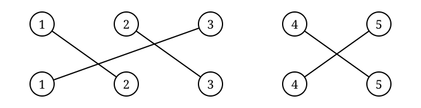

A permutation of a set \(X\) is a one-to-one and onto function
\[ \sigma:X\longrightarrow X. \]
The permutations of a set \(X\) form a group \(S_X\).
If \(X\) is finite, we can assume
\[ X=\{1,2,\ldots,n\}. \]
In this case, we write \(S_n\) instead of \(S_X\).
The group \(S_n\) is called the symmetric group on \(n\) letters.
A permutation describes a rearrangement of a set.
We can represent a permutation by drawing where each element is sent.

Follow the lines in the drawing:
\[ 1\mapsto2,\qquad 2\mapsto3,\qquad 3\mapsto1,\qquad 4\mapsto5,\qquad 5\mapsto4. \]
Every element is sent to exactly one element, and every element is the image of exactly one element.
We can record the same permutation without the drawing.
The top row lists the elements.
The bottom row records where each element is sent.
\[ \begin{pmatrix} 1&2&3&4&5\\ 2&3&1&5&4 \end{pmatrix} \]
The drawing and the two-line notation represent the same permutation.
Today we are going to construct every element of \(S_4\).
There are $|S_4|=4!=24 permutations to construct.
For each card:
We have constructed the \(24\) elements of \(S_4\). How should we multiply two permutations?
Place one permutation drawing on top of another and follow the paths from top to bottom.
If \(\sigma\) is on the bottom and \(\tau\) is on the top, we write \(\sigma\tau\).
Apply the function \(\tau\) first, then \(\sigma\).
\[\sigma\tau(x)=\sigma(\tau(x))\]
Choose several pairs of tiles and calculate their products.
For each pair, stack the two permutation drawings. Follow \(1,2,3,4\) through both drawings. Find the tile representing the product.
Ponderings: Does your product always correspond to another tile in \(S_4\)? Can you find an indentity tile \(e\)? Can you find inverses?
Choose three permutation tiles and call them \(\sigma,\qquad\tau,\qquad\rho\).
Calculate \((\sigma\tau)\rho\). Find the corresponding tile in \(S_4\) for \((\sigma\tau)\).
Calculate \(\sigma(\tau\rho)\). Find the corresponding tile in \(S_4\) for \((\tau\rho)\).
Compare your results are the two resulting mappings the same or different?
–
The symmetric group on \(n\) letters, \(S_n\), is a group with \(n!\) elements, where the binary operation is the composition of maps.
Identity: Consider the permutation \(\pi(i)=i\).
Inverse: If \(\pi(i)=j\), define \(\tau(j)=i\).
Associativity: Composition of maps is associative.
The order of \(S_n\) is an exercise.
Choose two permutation tiles and call them \(\sigma\) and \(\tau\).
Calculate both \(\sigma\tau\) and \(\tau\sigma\).
Find pairs of tiles that do commute and pairs of tiles that don’t communte.
Permutation drawings show us where every element goes. Instead of recording every mapping, we can follow an element until we return to where we started.
For example, \(1\mapsto2\mapsto3\mapsto1\) is written \((1\,2\,3)\).
The other set of elements satisfies \(4\mapsto5\mapsto4\). We write \((4\,5)\).
Together, the permutation is \((1\,2\,3)(4\,5)\). This is called cycle notation.
In the cycle \((1\,3\,4\,2)\) we read from left to right:
\[ 1\mapsto3,\qquad 3\mapsto4,\qquad 4\mapsto2,\qquad 2\mapsto1. \]
Elements that do not appear in a cycle are fixed.
For example, in \(S_6\) \((1\,3\,4\,2)\)
also means \(5\mapsto5 \qquad\text{and}\qquad6\mapsto6\).
Return to your \(S_4\) permutation tiles.
For each tile, write the result in cycle notation in the remaining blank space.
Ponderings: Which permutations consist of one cycle? Which have more than one cycle? Which elements are fixed?
Now return to the \(S_6\) tiles you constructed.
For each tile write the permutation in cycle notation.
Then compare your tiles with others in your group.
Ponderings: Can you find a permutation with fixed points, a \(2\)-cycle, a \(3\)-cycle, a \(4\)-cycle, a \(5\)-cycle, a \(6\)-cycle, and a permutation containing two disjoint cycles?
Let
\[ \sigma=(1\,3\,5)(2\,4), \qquad \tau=(1\,2\,6)(3\,4). \]
Compute \(\sigma\tau\) right to left:
\[ 1\xrightarrow{\tau}2\xrightarrow{\sigma}4 \quad 4\xrightarrow{\tau}3\xrightarrow{\sigma}5 \quad 5\xrightarrow{\tau}5\xrightarrow{\sigma}1 \]
so we get \((1\,4\,5)\).
Starting with \(2\):
\[ 2\xrightarrow{\tau}6\xrightarrow{\sigma}6 \quad 6\xrightarrow{\tau}1\xrightarrow{\sigma}3 \quad 3\xrightarrow{\tau}4\xrightarrow{\sigma}2 \]
so we get \((2\,6\,3)\).
Therefore,
\[ \boxed{\sigma\tau=(1\,4\,5)(2\,6\,3)}. \]
Let \(\sigma\) and \(\tau\) be two disjoint cycles in \(S_X\). Then \(\sigma\tau=\tau\sigma\).
If \(x\) occurs in \(\sigma\), then \(\tau\) fixes \(x\) and every element to which \(\sigma\) sends \(x\).
Every permutation in \(S_n\) can be written as the product of disjoint cycles.
Start with \(1\) and repeatedly apply \(\sigma\):
\[ 1,\sigma(1),\sigma^2(1),\ldots \]
Since the set is finite, we eventually return to \(1\), producing a cycle.
Next, choose an element not appearing in that cycle and repeat the process.
Continuing in this manner produces disjoint cycles \(\sigma_1,\sigma_2,\ldots,\sigma_r\)
such that\(\sigma=\sigma_1\sigma_2\cdots\sigma_r\).
A cycle of length \(2\) is called a transposition.
For example,\((2\,5)\) is a transposition. Any cycle can be written as a product of transpositions:
\[ (a_1\,a_2\,\ldots\,a_n) = (a_1\,a_n)(a_1\,a_{n-1})\cdots(a_1\,a_3)(a_1\,a_2). \]
A permutation is even if it can be expressed as an even number of transpositions.
A permutation is odd if it can be expressed as an odd number of transpositions.
Return to the 24 permutation tiles that make up \(S_4\).
Then sort all \(24\) tiles into two groups: odd permutation and even permutations.
Ponderings: How many permutations are even? How many permutations are odd? What types of cycles appear in each group?
Theorem. If a permutation \(\sigma\) can be expressed as the product of an even number of transpositions, then any other product of transpositions equaling \(\sigma\) must also contain an even number of transpositions.
Similarly, if \(\sigma\) can be expressed as the product of an odd number of transpositions, then any other product of transpositions equaling \(\sigma\) must also contain an odd number of transpositions.
Thus, although a permutation may have many different representations as products of transpositions, its parity is well-defined.
The set of all even permutations in \(S_n\) is denoted by \(A_n\).
The group \(A_n\) is called the alternating group on \(n\) letters.
\[ A_n=\{\sigma\in S_n:\sigma\text{ is even}\}. \]
The set \(A_n\) is a subgroup of \(S_n\).
Why?
Proposition. The number of even permutations in \(S_n\), \(n\geq2\), is equal to the number of odd permutations; hence,
\[ |A_n|=\frac{n!}{2}. \]
Let \(A_n\) be the set of even permutations and \(B_n\) the set of odd permutations.
Fix a transposition \(\sigma\in S_n\) and define
\[ \lambda_\sigma:A_n\longrightarrow B_n \]
by \(\lambda_\sigma(\tau)=\sigma\tau\). Multiplication by a transposition changes the parity of a permutation. The map \(\lambda_\sigma\) is a bijection, so \(A_n\) and \(B_n\) contain the same number of elements.
\[ |A_4|=\frac{4!}{2}=12, \]
there are twelve elements:
\[ \begin{aligned} &(1), &(1\,2)(3\,4), &(1\,3)(2\,4), &(1\,4)(2\,3),\\ &(1\,2\,3), &(1\,3\,2), &(1\,2\,4), &(1\,4\,2),\\ &(1\,3\,4), &(1\,4\,3), &(2\,3\,4), &(2\,4\,3). \end{aligned} \]